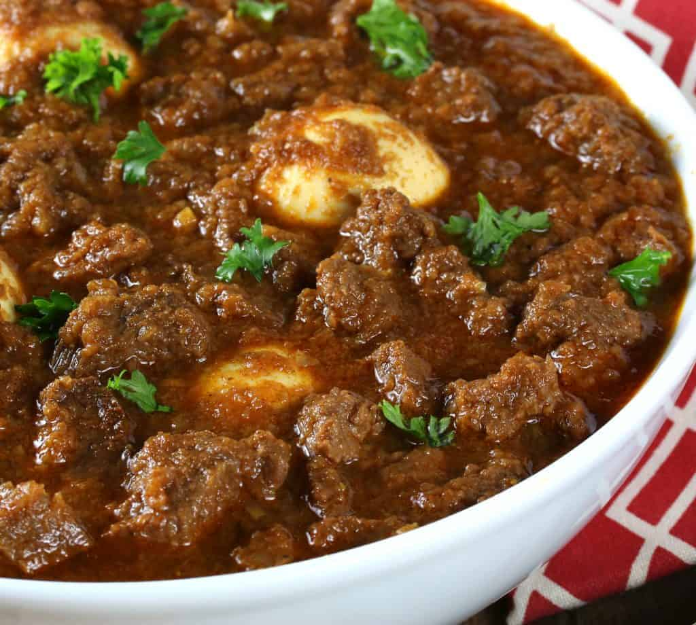

TIBS

Description
Tibs Wot Made with tender, boneless leg of lamb,
this quick-cooking staple of Ethiopian home cooking is flavored with spicy, smoky, tangy awaze sauce.
Ingredients
- 2 tablespoons red wine
- 1 tablespoon fresh lemon juice
- 1 tablespoon berbere (see Note)
- 1 teaspoon smoked paprika
- 1 teaspoon Dijon mustard
- 3 1/2 pounds trimmed boneless leg of lamb (see Note), cut into 1-inch cubes
- Kosher salt
- Freshly ground pepper
- 1/4 cup extra-virgin olive oil
- 2 red onions, halved and thinly sliced
- 6 garlic cloves, minced
- 2 teaspoons finely chopped rosemary
- 2 teaspoons finely chopped thyme
- 2 plum tomatoes, cut into 3/4-inch dice
- 1 yellow bell pepper, cut into 1/2-inch dice
- 1 large shallot, thinly sliced
Steps
-
In a small bowl, whisk the wine with the lemon juice, berbere, paprika, and mustard.
-
Season the lamb with salt and pepper. In a large enameled cast-iron casserole, heat the olive oil until shimmering. Add half of the lamb to the casserole and cook over moderately high heat, turning, until browned all over, 6 to 8 minutes.
Using a slotted spoon, transfer the lamb to a medium bowl.
Repeat with the remaining lamb.
-
Add the onions, garlic, rosemary, thyme, and a generous pinch each of salt and pepper to the casserole and cook over moderate heat, stirring occasionally, until the onions have softened, about 8 minutes.
-
Add the lamb and any accumulated juices to the casserole along with the wine mixture,
tomatoes, bell pepper, and shallot. Cook over moderate heat, stirring,
until the tomatoes and bell pepper have softened and the lamb is just cooked through, about 10 minutes.
Season with salt and pepper and serve